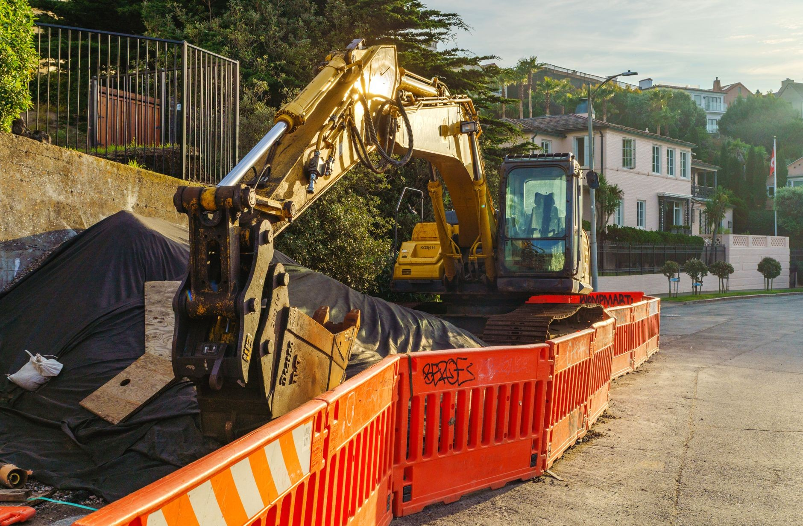
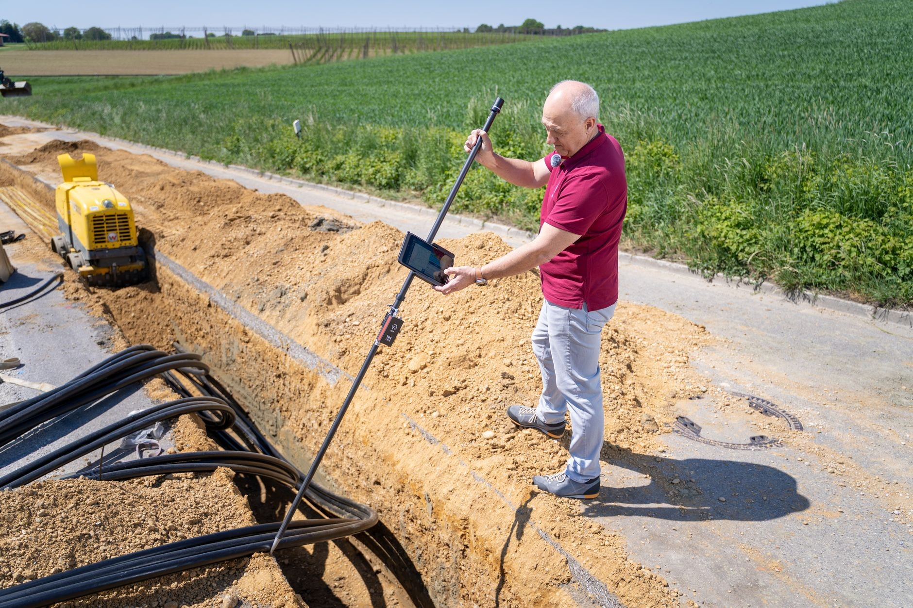

Prace ziemne minikoparką
Minikoparka sprawdza się tam, gdzie jest ciasno: na zabudowanej posesji, w ogrodzie, przy istniejącym domu. Cenę podajemy po rozmowie o tym, co i gdzie trzeba zrobić.

Wykopy pod fundamenty
Wybieramy grunt pod ławy i płytę na głębokość z projektu. Ziemię składamy na działce we wskazanym miejscu.

Przyłącza wody, kanalizacji i prądu
Wąskie wykopy od budynku do granicy działki. Po ułożeniu rur zasypujemy i równamy teren.

Drenaż i odkopanie fundamentów
Odkopujemy ściany pod izolację albo drenaż, a po robocie zasypujemy wykop.

Szamba i zbiorniki
Wykop pod szambo, przydomową oczyszczalnię albo zbiornik na deszczówkę, z zasypaniem wokół.

Niwelacja i korytowanie
Równamy działkę pod trawnik, korytujemy pod podjazd i kostkę, rozplantowujemy ziemię.

Prace w ogrodzie
Wykopy pod ogrodzenie, nasadzenia, oczko wodne i nawadnianie, bez rozjeżdżania całego trawnika.
Która z usług Cię interesuje?
Zadzwoń i powiedz, co chcesz zrobić. Podamy cenę i termin.